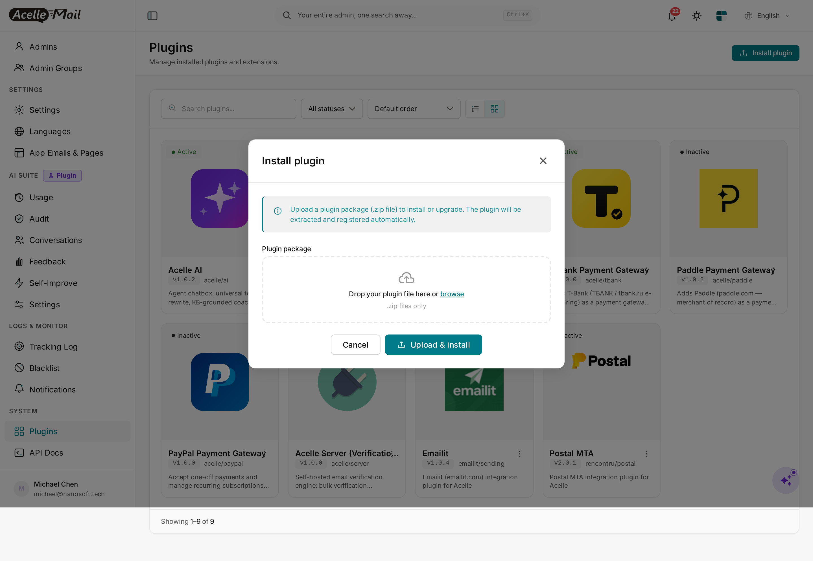
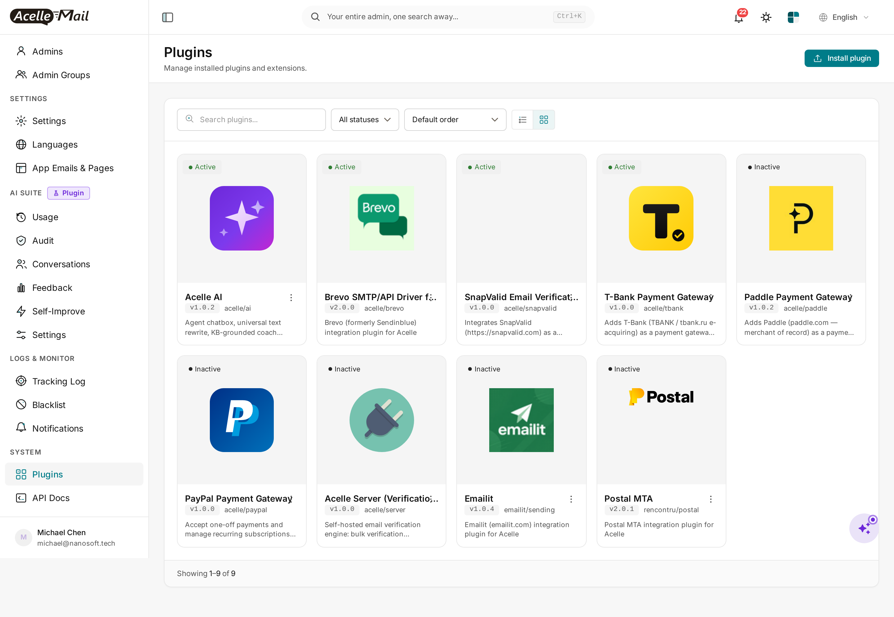
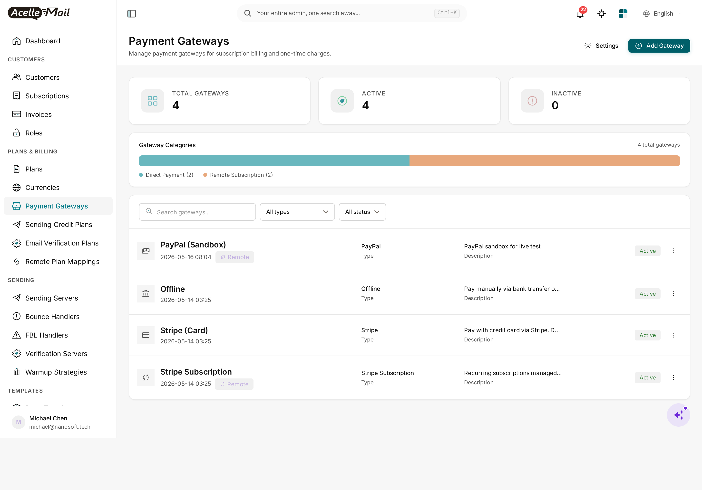
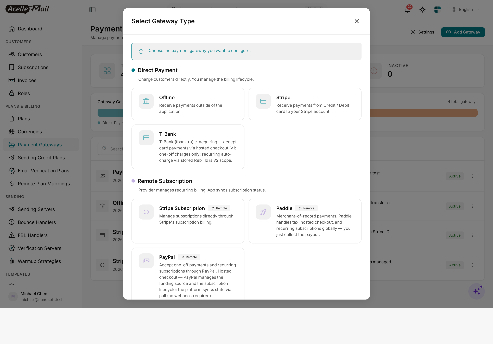
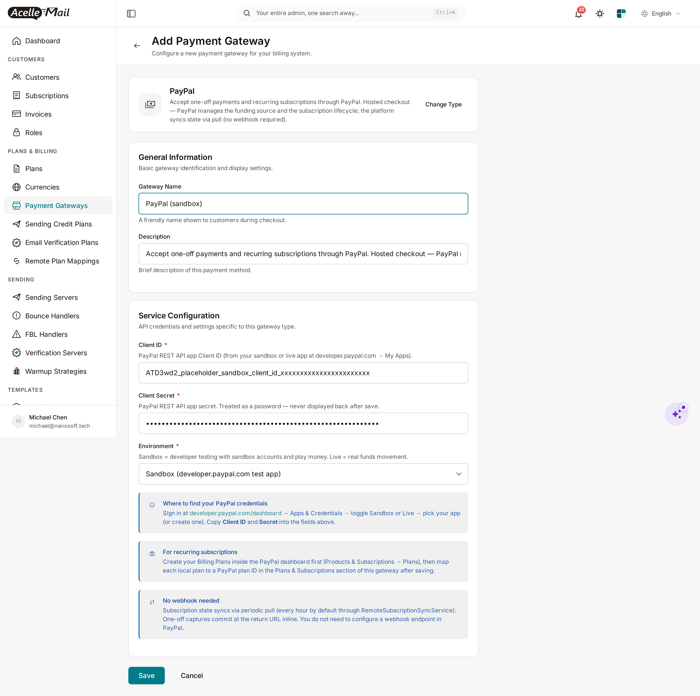

PayPal Payment Gateway for Acelle Mail — User Guide
A drop-in plugin that adds PayPal (paypal.com) as a payment gateway in Acelle. Customers can pay with their existing PayPal balance, credit card, or local payment method through PayPal's hosted checkout. Supports both one-off charges (PayPal Orders v2) and recurring subscriptions (PayPal Billing Subscriptions v1) — and like Paddle, the integration is pull-only: no public webhook endpoint to host.
Table of Contents
- Requirements
- Install the plugin
- Enable the plugin
- Add PayPal as a payment gateway
- Configure Client ID + Secret + Environment
- Map your local plans to PayPal Billing Plans
- How customers pay
- Subscription state sync
- Sandbox testing
- Troubleshooting
- Uninstall
1. Requirements
| Minimum | |
|---|---|
| Acelle Mail | 4.0.24 or newer |
| PHP | 8.1+ (matches Acelle's own minimum) |
| PayPal account | A PayPal Business account at paypal.com (free signup). A free Sandbox is included for testing. |
| REST API app | Create one at developer.paypal.com/dashboard → Apps & Credentials. The app produces a Client ID and Secret — the only two credentials this plugin needs. |
| Outbound HTTPS | Server must reach api-m.sandbox.paypal.com (sandbox) and api-m.paypal.com (live) on port 443 |
| Inbound HTTPS | Your Acelle install must be reachable so customers can be redirected back from PayPal after approve / cancel (/cashier/paypal/return/{intent_uid}) |
You do not need:
- A public webhook endpoint or webhook configuration in PayPal's dashboard
- IPN (Instant Payment Notification) — that's a legacy push protocol; this plugin uses the modern pull model
- Cron beyond Acelle's existing scheduler (subscription sync runs inside
php artisan schedule:run)
2. Install the plugin
Standard Acelle plugin install — admin → Plugins → upload ZIP.
Steps
- Download the plugin ZIP from CodeCanyon (file name:
acelle-paypal-v1.0.x.zip). - In the admin sidebar, open System → Plugins.
- Click Install plugin in the top right.
- Drop the ZIP into the upload box (or click Choose File) and click Upload & install.
The progress dialog runs through three steps — Uploading package → Extracting + writing files → Registering plugin + running install routines — and finishes in 5–30 seconds.

After install completes, the Plugins list reloads and PayPal Payment Gateway appears as Inactive:

3. Enable the plugin
Installing only registers the plugin on disk; enable it explicitly so you stay in control of which gateways are available.
Steps
- In the Plugins list, find the PayPal Payment Gateway card.
- Click the ⋮ (kebab) menu in the card's top-right and pick Enable.

The card flips to Active:
Disable removes PayPal from the gateway picker for new gateways but keeps existing
payment_gatewaysrows of typepaypal. Delete also drops every PayPal gateway row — see §11.
4. Add PayPal as a payment gateway
Now that the plugin is active, you can register your PayPal app as one of your billing gateways.
Steps
- In the admin sidebar, open Plans & Billing → Payment Gateways.
- Click + Add Gateway in the top right.

- The gateway picker opens. Pick PayPal from the Remote Subscription group:

PayPal is in Remote Subscription because the subscription lifecycle is owned by PayPal (their Billing Subscriptions API), not Acelle. This is the same group as Paddle and Stripe Subscription. (The "Direct Payment" group above — Offline, Stripe card-token, T-Bank — covers gateways where Acelle owns the subscription record.)
5. Configure Client ID + Secret + Environment
After picking PayPal, you land on the configuration form.
Fill in these fields:
| Field | Value |
|---|---|
| Gateway Name | What customers see at checkout (e.g. PayPal, Pay with PayPal) |
| Description | Free-form. Optional. |
| Client ID | The ATD3wd2… Client ID from your PayPal REST app. Get it from developer.paypal.com/dashboard → Apps & Credentials → toggle Sandbox or Live → pick your app. |
| Client Secret | The EJlMTW… Secret from the same app. Treated as a password and never displayed back after save. |
| Environment | Sandbox (developer testing with sandbox accounts and play money) or Live (real funds movement). |

Client ID and Secret are environment-bound. A Sandbox Client ID will NOT authenticate against the Live API and vice versa. Mixing them is the most common mistake — if PayPal returns
Authentication failedafter save, double-check the Sandbox/Live toggle in the PayPal dashboard matches the dropdown value here.
Click Save. The plugin runs an immediate POST /v1/oauth2/token call against the chosen environment as a connection test — if credentials are wrong, you'll see the error inline and the gateway is not saved.
No webhook URL to register. Once the gateway is saved you're done — no callback URL to copy into the PayPal dashboard, no
webhook_idto paste back, no event subscriptions to configure. State syncs in the other direction (Acelle pulls from PayPal on a schedule — see §8).
6. Map your local plans to PayPal Billing Plans
For one-off charges (a customer paying upfront for a single subscription term), no mapping is needed — the plugin creates the Order on the fly with the local plan's price.
For recurring subscriptions (auto-renewal at the end of each term), you must map each local Acelle plan to a PayPal Billing Plan (PayPal's own plan resource).
Steps
- Create the PayPal Billing Plan first. Log in at paypal.com → Pay & Get Paid → Subscriptions → Plans → Create plan. Pick a product, set the billing cycle (e.g. monthly USD 49.00), save. PayPal gives the plan an id like
P-5ML4271244454362WXNWU5NQ. - Map it in Acelle. Open your Acelle PayPal gateway → Plans & Subscriptions → Remote Plan Mapping. For each local plan you want to offer through PayPal, pick the corresponding
P-…plan id from the dropdown (which is fetched live fromGET /v1/billing/plansat PayPal). - Save the mapping. Acelle now knows that "local plan X = PayPal plan P-…".
When a customer subscribes to local plan X, the plugin starts a PayPal subscription against P-… and PayPal handles the recurring billing forever after.
Why do I have to create plans at PayPal too? PayPal's recurring billing requires their resource model: a Product → a Plan → a Subscription. Acelle wraps the Subscription end of that and stores the plan-to-plan mapping, but the Plan resource itself must exist at PayPal because PayPal is the merchant of record for recurring charges.
7. How customers pay
When a customer picks PayPal at checkout, Acelle redirects them through a single plugin route:
GET /cashier/paypal/checkout/{intent_uid}?return_url=…
The handler:
- Looks up the
PaymentIntentand decides the path — one-off or subscription based on the intent type. - One-off: calls PayPal's
POST /v2/checkout/orderswith the line items + return / cancel URLs. - Subscription: calls PayPal's
POST /v1/billing/subscriptionsagainst the mapped Plan id + return / cancel URLs. - Receives an
approveURL back from PayPal. - Issues a 302 redirect to that hosted-checkout URL.
The customer pays on PayPal's hosted page (PayPal handles fraud screening, 2FA, currency conversion, local payment methods) and is sent back to:
GET /cashier/paypal/return/{intent_uid}?token=… # one-off approved
GET /cashier/paypal/return/{intent_uid}?subscription_id=… # subscription approved
GET /cashier/paypal/return/{intent_uid}?cancel=1 # customer cancelled
For one-off, the return handler calls POST /v2/checkout/orders/{id}/capture inline (commits the money) and flips the PaymentIntent to SUCCEEDED. For subscription, the return handler stores the PayPal subscription id and marks the local subscription active; subsequent renewals are detected by the periodic sync (§8).
There is no headless / in-app checkout. PayPal requires their hosted approve flow for SCA / 3DS / 2FA. The plugin's
createSubscriptionheadless method ([for plans that want it] e.g. with a stored Vault payment method) is reserved for advanced future use.
8. Subscription state sync
Once a customer activates a subscription, PayPal owns its lifecycle (renewals, cancellations, failures, refunds). Acelle pulls state on demand.
Three sync triggers:
| Trigger | When | What it does |
|---|---|---|
| Per-page lazy fetch | Admin or customer opens a subscription detail page | Calls GET /v1/billing/subscriptions/{id} and renders the latest status, next-bill-date, and payment-method preview directly |
| Periodic sync job | Hourly by default (Acelle scheduler) | RemoteSubscriptionSyncService walks every active remote sub through this gateway, fetches state, and dispatches lifecycle events (onSubscriptionRenewed, onSubscriptionCancelled, onPaymentFailed …) |
| Manual "Refresh" | Admin clicks the Refresh button on a subscription page | Forces a fresh fetch bypassing any cache |
Because the architecture is pull-not-push, state lags reality by at most one sync interval (typically minutes). For SaaS billing this is fine — the customer doesn't see the new sub status the literal microsecond PayPal confirms it; they see it on the next page render or the next periodic tick.
9. Sandbox testing
PayPal Sandbox is fully isolated from Live — separate accounts, separate balances, separate API hosts.
Steps
- Go to developer.paypal.com/dashboard → Sandbox → Accounts. PayPal gives you 2 default sandbox accounts (one business, one personal).
- Note the personal account's email — that's the buyer you'll use to "pay" in test transactions.
- In your Acelle PayPal gateway, choose Environment = Sandbox and use the Sandbox Client ID / Secret.
- At checkout, sign in with the personal sandbox account email when redirected to PayPal.
You can create additional sandbox accounts in different currencies / countries from the same dashboard — useful for testing currency conversion and country-restricted scenarios.
Sandbox sometimes returns
INTERNAL_SERVICE_ERRORon first request after a long quiet period — PayPal's sandbox cold-starts. Retry once.
10. Troubleshooting
| Symptom | Likely cause | Fix |
|---|---|---|
| "Authentication failed" on save | Environment ↔ Client ID mismatch | Sandbox creds + Sandbox dropdown; Live creds + Live dropdown — don't mix |
| Customer lands on PayPal error page | Currency unsupported for the buyer's country, or amount below PayPal's per-currency minimum | Check the order currency is in PayPal's supported list (USD, EUR, GBP, JPY, AUD, CAD, etc.) and the amount is above minimum (1¢ for most) |
| Subscription stays "Pending" after approve | The customer cancelled at PayPal's approve page (browser returned but with ?cancel=1) |
Check the PaymentIntent — if the return-handler saw cancel=1, the intent is marked CANCELLED. If status is stuck PENDING, the customer closed the tab without approving |
| Renewals not appearing in Acelle | Sync cron not running, or PayPal subscription was cancelled outside Acelle | Run php artisan schedule:run manually; check the sub status at PayPal → Subscriptions |
cURL error 28: Operation timed out |
Outbound firewall blocks PayPal API hosts | Open port 443 to api-m.paypal.com and api-m.sandbox.paypal.com |
Plan not found when subscribing |
Local plan not mapped to a PayPal Plan id | Map at gateway → Plans & Subscriptions → Remote Plan Mapping (§6) |
| Plugin shows Active but PayPal missing from gateway picker | Stale opcache / view cache | php artisan optimize:clear and reload |
For everything else, the plugin's HTTP calls log to storage/logs/laravel.log at info on success and error on failure with the full PayPal response body inline.
11. Uninstall
- Open System → Plugins.
- Find PayPal Payment Gateway, click the ⋮ menu and pick Disable. The PayPal gateway type immediately disappears from the admin gateway picker — existing
payment_gatewaysrows of typepaypalare kept (so you don't lose audit history). - To also remove the plugin files: same menu → Delete. This rolls back the plugin's migrations and removes the on-disk folder.
The core Acelle install is left exactly as it was. The PayPal app in your developer dashboard is unaffected — feel free to keep it for later use or delete it from PayPal's dashboard if you no longer need it.
Support
- Documentation: this guide + the comment header at the top of every plugin source file
- Issue tracker / questions: the CodeCanyon item comments page
- Direct contact: see the Author column on the CodeCanyon item page
For PayPal account, payout, app-credential, or business-verification questions, please contact PayPal merchant support directly — those are out of scope for this plugin.